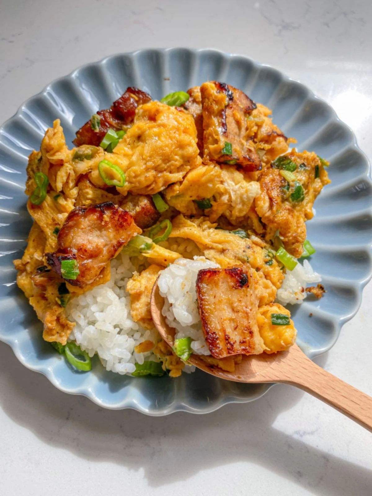

Home
Chinese Scrambled Eggs with BBQ Pork

Description
Honey glazed char siu (bbq pork) is stir fried with soft scrambled eggs, chives and green onions.
Ingredients
- ¼ pound bbq pork (char siu) (6 inch piece)
- 3-4 stalks chinese chives (optional) sliced
- 1 green onion sliced
- 4 eggs
- ½ teaspoon salt
- ½ teaspoon chicken bouillon
- pinch of sugar
- 1 tablespoon avocado oil
Steps
- Cut green onions and chives. Slice char siu in large or small cubes (up to you!). Set aside.
- Whisk 4 eggs with ½ teaspoon salt, ½ teaspoon chicken bouillon, and sugar. Set aside beaten eggs.
- Heat pan on low medium heat. Once hot, add 1 tablespoon avocado oil. Add bbq pork on the pan and fry for a
minute or until you see the pieces golden.
- Immediately, add chinese chives and green onions to the pan. Then, add whisked eggs. Scramble and cook for 30
seconds.
- The dish should take no longer than 3 minutes to cook The longer we cook, the eggs & char siu will be overcooked
and dry. Hope you enjoy!